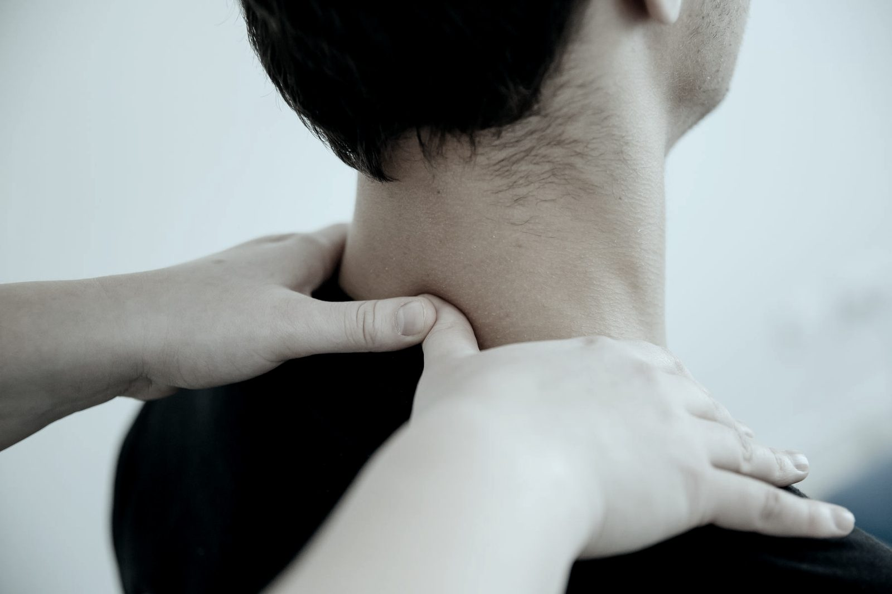

01 / 04
manual
Fisioterapia manual personalizada
Valoración y tratamiento con técnicas manuales adaptadas a cada caso: movilizaciones articulares, técnicas de tejido blando y ejercicio terapéutico dirigido.
